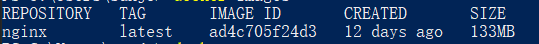
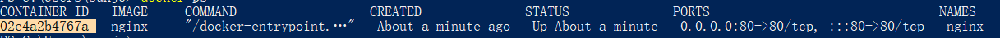
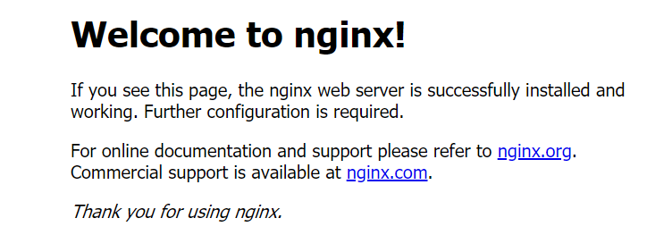

nginx的使用
docker 中运行nginx
拉取nginx最新镜像
1 | docker pull nginx:latest |
如果需要指定版本，可以到 Docker Hub 镜像仓库 选择指定Tag
1 | docker pull nginx:1.21.3 |
查看是否拉取成功
1 | docker images |

运行nginx
一般需要代理转发，需要修改配置。直接修改容器的配置不是很方便，这时候，可以用上挂载功能，让容器加载或写入宿主机器上的挂载目录。
这样，我们直接在宿主机上就可以修改配置或查看日志了。
首先在宿主机上创建3个nginx的文件夹(笔者是使用Windows版的Docker Desktop进行测试的，故宿主机是windows，如果是部署到Linux的话则使用mkdir -p进行创建)：
html: 挂载静态页面目录
conf: 挂载nginx的主配置文件，以方便在宿主机上直接修改容器的配置文件
log: 挂载容器内nginx的日志，容器运行起来之后，可以直接在宿主机的这个目录中查看nginx日志

拷贝容器中默认的配置文件
1 | 先简单运行nginx |
新版本的docker desktop设置中设置后支持直接D:\ 如果不支持的则可以使用/d/ 代表D:\

可以看到我们在本地的conf文件夹中多了一个nginx.conf，这个就是nginx的核心配置文件了
当然如果本地已经有了配置文件，则可以不用拷贝容器中默认的配置文件，直接进入下一步
挂载后运行
1 |
|
–restart=always 一直保持运行，自动启动 -d 表示在一直在后台运行容器
打开浏览器输入localhost后看到如下页面，就说明nginx已经启动成功，后面就根据项目需要配置更改nginx.conf即可

常用命令
修改配置后，我们可以重启镜像，或者进入镜像中 ./nginx -s reload，即可让修改生效:
查看nginx 运行的容器ID
1 | docker ps |
进入容器
1 | docker exec -it 容器id /bin/bash |
重新加载
1 | docker exec -t 容器id nginx -s reload |
如果有需要则可以重启容器容器重启
1 | docker exec -t 容器id nginx -t |